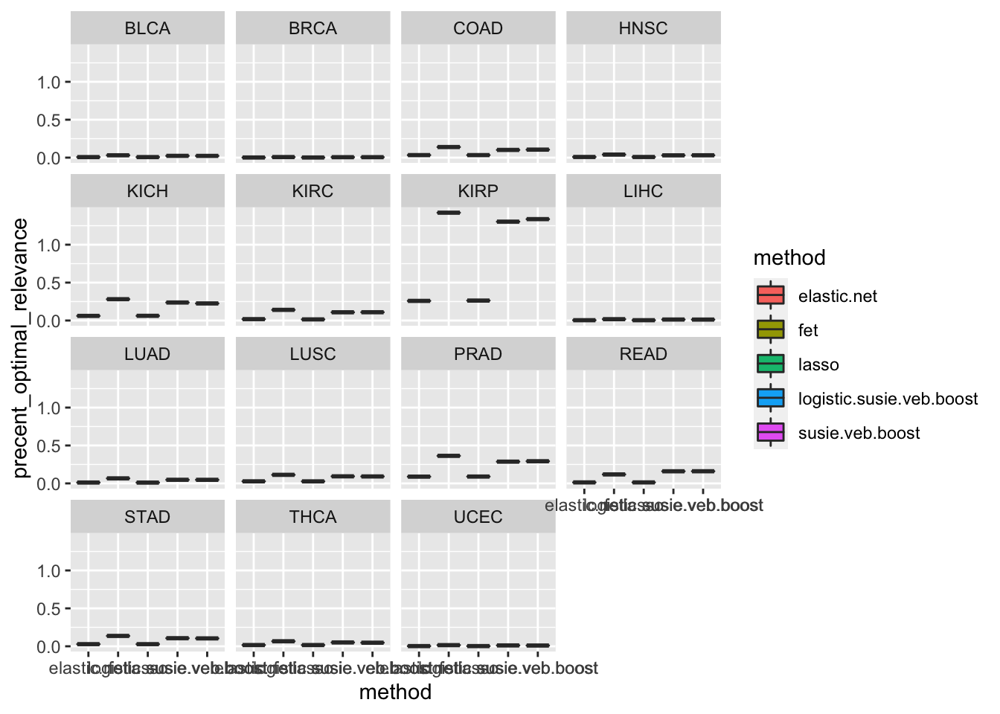
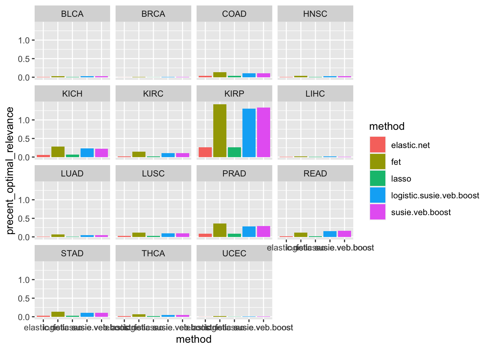
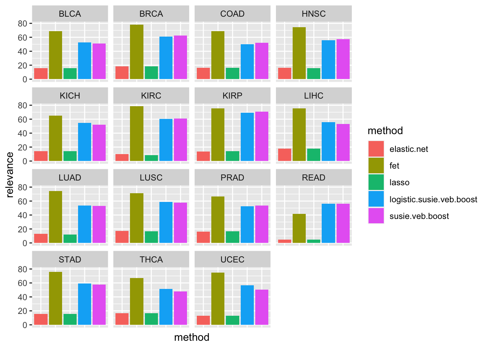
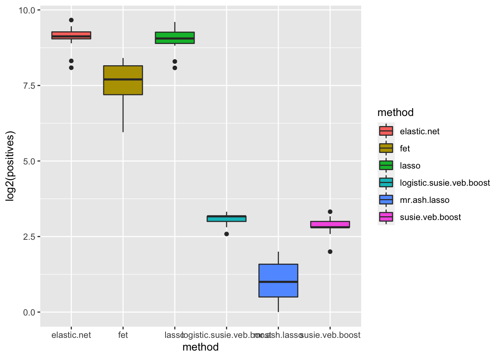
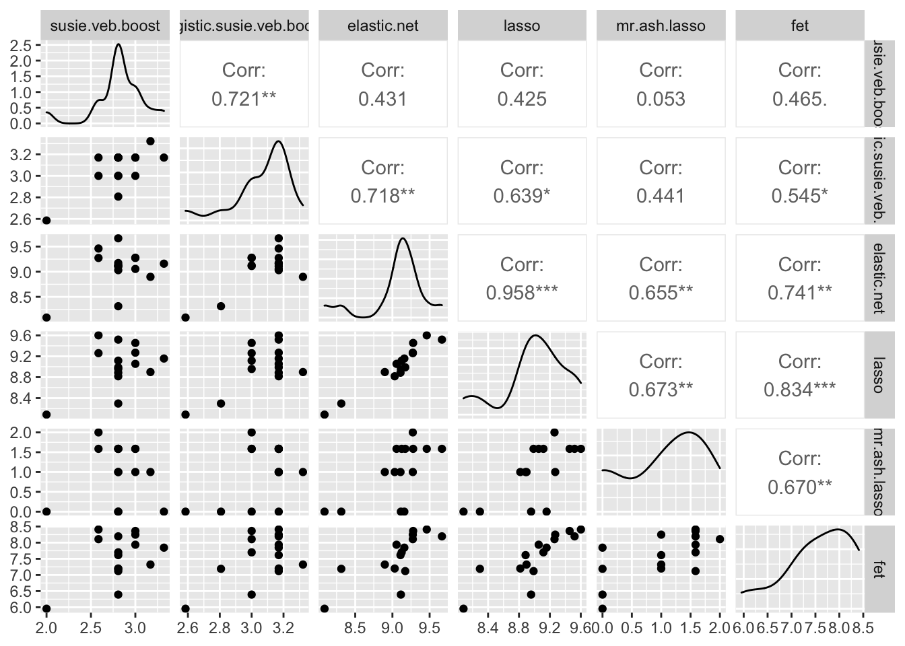
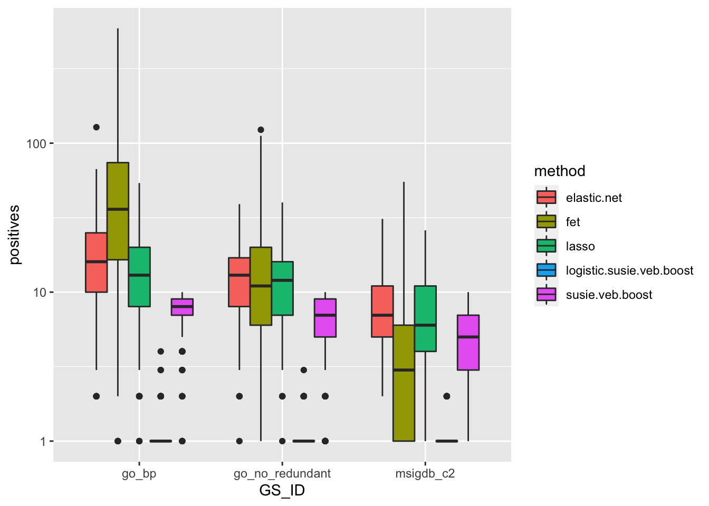
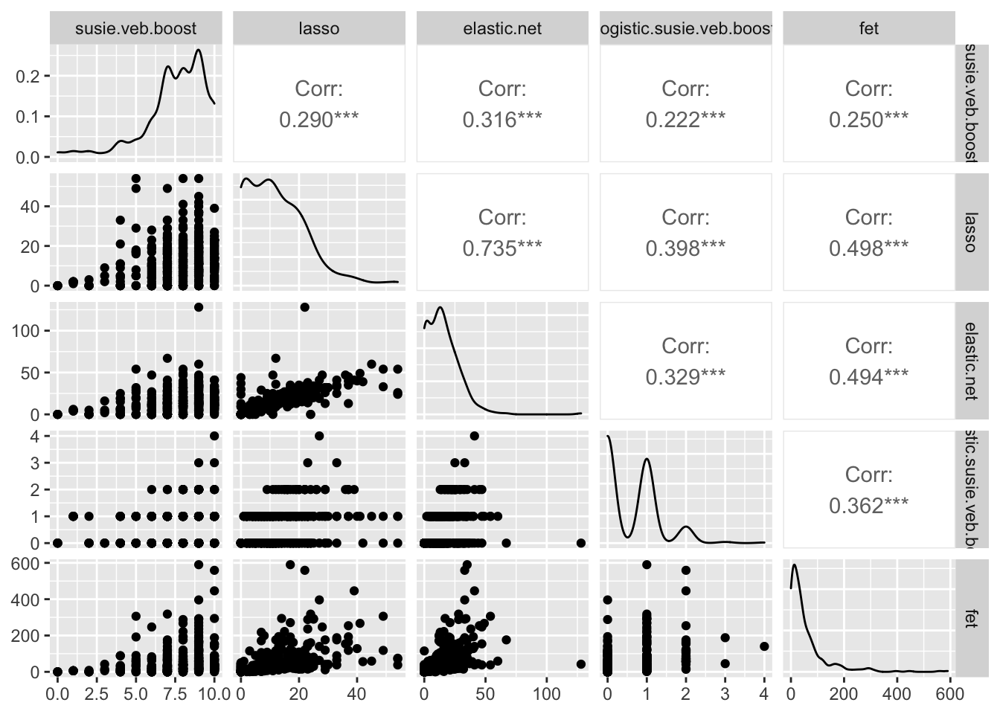
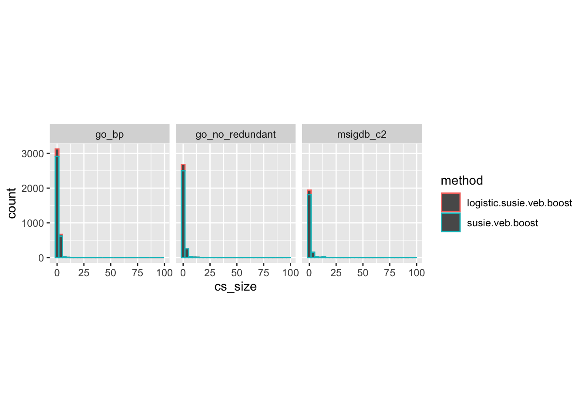
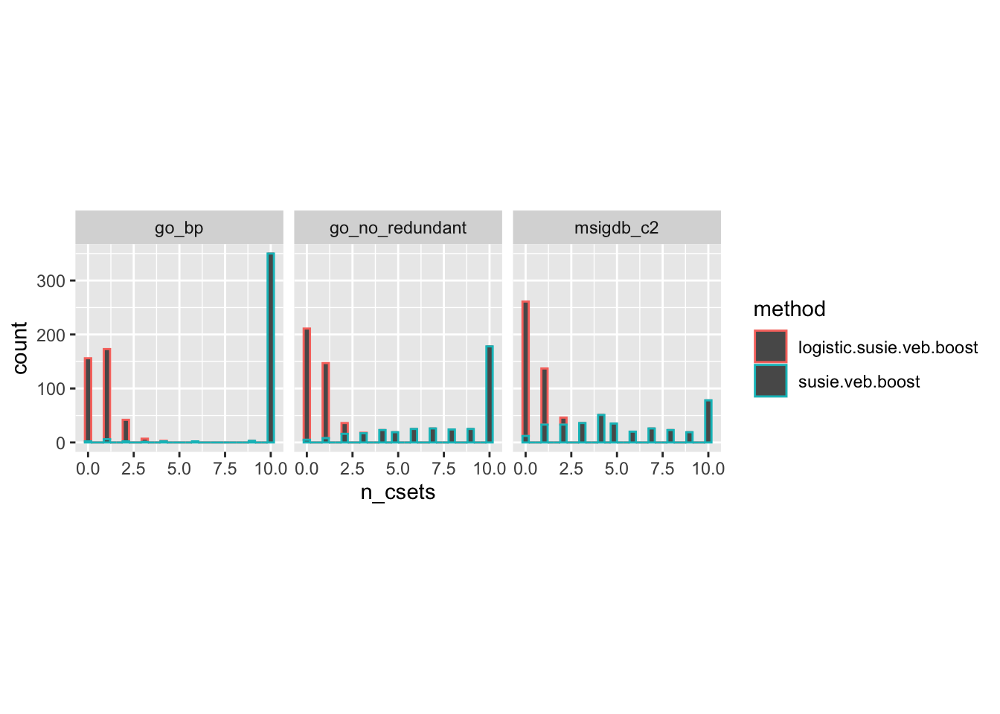

GSEA Method comparisons
karltayeb
2021-04-26
Last updated: 2021-05-08
Checks: 7 0
Knit directory: logistic_susie_gsea/
This reproducible R Markdown analysis was created with workflowr (version 1.6.2). The Checks tab describes the reproducibility checks that were applied when the results were created. The Past versions tab lists the development history.
Great! Since the R Markdown file has been committed to the Git repository, you know the exact version of the code that produced these results.
Great job! The global environment was empty. Objects defined in the global environment can affect the analysis in your R Markdown file in unknown ways. For reproduciblity it’s best to always run the code in an empty environment.
The command set.seed(20210205) was run prior to running the code in the R Markdown file. Setting a seed ensures that any results that rely on randomness, e.g. subsampling or permutations, are reproducible.
Great job! Recording the operating system, R version, and package versions is critical for reproducibility.
Nice! There were no cached chunks for this analysis, so you can be confident that you successfully produced the results during this run.
Great job! Using relative paths to the files within your workflowr project makes it easier to run your code on other machines.
Great! You are using Git for version control. Tracking code development and connecting the code version to the results is critical for reproducibility.
The results in this page were generated with repository version e5b024a. See the Past versions tab to see a history of the changes made to the R Markdown and HTML files.
Note that you need to be careful to ensure that all relevant files for the analysis have been committed to Git prior to generating the results (you can use wflow_publish or wflow_git_commit). workflowr only checks the R Markdown file, but you know if there are other scripts or data files that it depends on. Below is the status of the Git repository when the results were generated:
Ignored files:
Ignored: .Rhistory
Ignored: .Rproj.user/
Ignored: analysis/GO_simulation_cache/
Untracked files:
Untracked: GO_simulation_cache/
Untracked: _targets.R
Untracked: _targets/
Untracked: _targets2.R
Untracked: analysis/cache/
Untracked: analysis/initial_exploration.Rmd
Untracked: analysis/test.Rmd
Untracked: cache/
Untracked: code/dream.targets.R
Untracked: code/fit.R
Untracked: code/gseabenchmark.targets.R
Untracked: code/logistic_susie.R
Untracked: code/plots.R
Untracked: code/score.R
Untracked: code/simulations.R
Untracked: code/utils.R
Untracked: data/DREAM_modules/
Untracked: data/GO_Membership.RData
Untracked: data/WebGestalt/
Untracked: data/WebGestalt_cache/
Untracked: data/gene_list.txt
Untracked: output/WebGestalt/
Unstaged changes:
Modified: .Rprofile
Modified: .gitignore
Modified: analysis/GO_simulation.Rmd
Note that any generated files, e.g. HTML, png, CSS, etc., are not included in this status report because it is ok for generated content to have uncommitted changes.
These are the previous versions of the repository in which changes were made to the R Markdown (analysis/gsea_comparisons.Rmd) and HTML (docs/gsea_comparisons.html) files. If you’ve configured a remote Git repository (see ?wflow_git_remote), click on the hyperlinks in the table below to view the files as they were in that past version.
| File | Version | Author | Date | Message |
|---|---|---|---|---|
| Rmd | e5b024a | karltayeb | 2021-05-08 | wflow_publish(c(“analysis/index.Rmd”, “analysis/gsea_comparisons.Rmd”, |
| html | a3c53f3 | karltayeb | 2021-05-08 | Build site. |
| Rmd | 8fbadf2 | karltayeb | 2021-05-08 | wflow_publish(“analysis/gsea_comparisons.Rmd”) |
We try to replicate some analysis from othe GSEA papers/ GSEA Benchmark papers, and extend them to compare multiple GSEA methods under consideration.
Overview
library(targets)
library(tidyverse)── Attaching packages ─────────────────────────────────────── tidyverse 1.3.1 ──✓ ggplot2 3.3.3 ✓ purrr 0.3.4
✓ tibble 3.1.1 ✓ dplyr 1.0.5
✓ tidyr 1.1.3 ✓ stringr 1.4.0
✓ readr 1.4.0 ✓ forcats 0.5.1# load and row_bind all targets matching a pattern
tar_agg <- function(pattern){
load.env <- new.env()
tar_load(matches(pattern), envir = load.env)
result <- grep(pattern , names(load.env), value=TRUE)
result <- do.call("list", mget(result, envir = load.env))
result <- bind_rows(result)
}GSEA BenchmarkR
Relevance scores
GSEABenchmarkeR is a package for benchmarking GSEA methods. They provide uniformly processed expression data from TCGA, and for each disease they provide “relevance scores” for gene sets in GO-BP, GO-MF, and KEGG. These relevance scores were derived from MalaCards. I’m not sure exactly how they were generated but they are supposed to serve as Silver standard to benchmark performance of GSEA methods.
- Took the gene sets used in GSEABenchmarkeR paper [cite] from GO and KEGG (downloaded from
EnrichmentBrowser, filter down to gene sets larger that 5 genes and smaller than 500 genes). - Performed a vanilla differential expression analysis from the
GSEABenchmarkeRdocumentation for each TCGA expression set. We construct gene lists by taking all genes with Benjamini Hochberg corrected pvalue \(< 0.05\) - Fit gene-list based GSEA methods to the resulting gene lists
- Compute a “relevance score” which compares the ranking produced by the GSEA method with the relevance scores.
Fishers exact test, SuSiE, and Logistic SuSiE have the highest relevance according to this relevance scores Ranks for SuSie, Logistic SuSiE, and mr.ash generated from PIPs, ranks for FET generated from BH corrected p-values.
pattern <- '^gseabenchmark.score_([^_])*$'
result <- tar_agg(pattern)
tar_load('gseabenchmark.score_lasso')
tar_load('gseabenchmark.score_susie.veb.boost')
tar_load('gseabenchmark.score_logistic.susie.veb.boost')
tar_load('gseabenchmark.score_lasso')
tar_load('gseabenchmark.score_elastic.net')
tar_load('gseabenchmark.score_fet')
result <- bind_rows(
gseabenchmark.score_fet,
gseabenchmark.score_lasso,
gseabenchmark.score_susie.veb.boost,
gseabenchmark.score_logistic.susie.veb.boost,
gseabenchmark.score_lasso,
gseabenchmark.score_elastic.net
)
result %>%
mutate(precent_optimal_relevance = relevance / opt.relevance) %>%
ggplot(aes(x=method, y=precent_optimal_relevance, fill=method)) +
geom_boxplot(position='dodge') + facet_wrap(vars(ID)) 
| Version | Author | Date |
|---|---|---|
| a3c53f3 | karltayeb | 2021-05-08 |
result %>%
mutate(precent_optimal_relevance = relevance / opt.relevance) %>%
ggplot(aes(x=method, y=precent_optimal_relevance, fill=method)) +
geom_col(position='dodge') + facet_wrap(vars(ID)) 
| Version | Author | Date |
|---|---|---|
| a3c53f3 | karltayeb | 2021-05-08 |
result %>%
ggplot(aes(x=method, y=relevance, fill=method)) +
geom_col(position='dodge') +
facet_wrap(vars(ID)) +
theme(axis.text.x=element_blank(), axis.ticks.x=element_blank())
| Version | Author | Date |
|---|---|---|
| a3c53f3 | karltayeb | 2021-05-08 |
Number of reported gene sets
Although FET and SuSiE both have high relevance, both SuSiE methods return far fewer gene sets. Perhaps this is an apples and oranges comparison. For SuSiE and mr.ash we include gene sets with \(PIP > 0.95\). For FET we include gene sets with a Benjamini Hochberg corrected p-value \(< 0.05\). For the regularized regression methods we include any gene set with nonzero coefficient.
pattern <- '^gseabenchmark.size_([^_])*$'
result <- tar_agg(pattern)
t <- 0.95
result %>% ungroup() %>%
unnest(c(positives, thresh)) %>%
filter(near(thresh, t)) %>%
ggplot(aes(x=method, y=log2(positives), fill=method)) +
geom_boxplot(position='dodge')
| Version | Author | Date |
|---|---|---|
| a3c53f3 | karltayeb | 2021-05-08 |
result %>% ungroup() %>%
unnest(c(positives, thresh)) %>%
filter(near(thresh, t)) %>%
mutate(log2pos = log2(positives)) %>%
pivot_wider(
id_cols = ID, names_from=method, values_from = log2pos) %>%
GGally::ggpairs(columns = 2:7)Registered S3 method overwritten by 'GGally':
method from
+.gg ggplot2
| Version | Author | Date |
|---|---|---|
| a3c53f3 | karltayeb | 2021-05-08 |
Across the board lasso and elastic net did did worse than Fisher’s exact test. That’s unexpected. All the bayesian variable selection methods select only a handful of components.
Logistic SuSiE and SuSiE both have favorable relevance scores, lathough not quite as good as fisher’s exact test.
DREAM STRING Consensus modules
These are the gene sets used in the gerr paper. The Diseas Module Identification DREAM Challenge was a crowd-sourced attempt at detecting disease related gene modules. The gerr paper showed results using 377 gene modules as gene lists. We repeat that analysis here using a few different gene sets: GO-Biological Process, GO-BP noredundant from WebGestaltR and MSigDB C2 curated gene sets.
pattern <- '^dream.modules.size_([^_])*$'
result <- tar_agg(pattern)
t <- 0.95
result %>% ungroup() %>%
unnest(c(positives, thresh)) %>%
filter(near(thresh, t)) %>%
ggplot(aes(x=GS_ID, y=positives, fill=method)) +
geom_boxplot(position='dodge') + scale_y_continuous(trans='log10') Warning: Transformation introduced infinite values in continuous y-axisWarning: Removed 1388 rows containing non-finite values (stat_boxplot).
| Version | Author | Date |
|---|---|---|
| a3c53f3 | karltayeb | 2021-05-08 |
Okay so for the smaller gene sets lasso and elastic.net are not really more sparse than Fisher’s exact test. But also, in these smaller gene sets FET
logistic SuSiE, with few exceptions return a single gene set with PIP \(>0.95\)
result %>% ungroup() %>%
unnest(c(positives, thresh)) %>%
filter(near(thresh, t), GS_ID == 'go_bp') %>%
pivot_wider(
id_cols = c(GS_ID, module.name), names_from=method, values_from = positives) %>%
select(!c(GS_ID, module.name)) %>%
GGally::ggpairs()
| Version | Author | Date |
|---|---|---|
| a3c53f3 | karltayeb | 2021-05-08 |
result %>% ungroup() %>%
unnest(c(positives, thresh)) %>%
filter(near(thresh, t), GS_ID == 'go_bp') %>%
pivot_wider(
id_cols = c(GS_ID, module.name), names_from=method, values_from = positives) %>%
select(!c(GS_ID, module.name)) %>%
GGally::ggpairs()
| Version | Author | Date |
|---|---|---|
| a3c53f3 | karltayeb | 2021-05-08 |
result %>% ungroup() %>%
unnest(c(positives, thresh)) %>%
filter(near(thresh, t), GS_ID == 'go_bp') %>%
pivot_wider(
id_cols = c(GS_ID, module.name), names_from=method, values_from = positives) %>%
select(!c(GS_ID, module.name)) %>%
GGally::ggpairs()
| Version | Author | Date |
|---|---|---|
| a3c53f3 | karltayeb | 2021-05-08 |
Credible Sets
pattern <- '^dream.modules.count.cs_([^_])*$'
result <- tar_agg(pattern)
result %>% filter(method %in% c('susie.veb.boost', 'logistic.susie.veb.boost')) %>%
select(method, module.name, GS_ID, cs_size) %>% unnest(cs_size) %>%
filter(cs_size < 100) %>%
ggplot(aes(x=cs_size, color=method)) + geom_histogram() + facet_wrap(vars(GS_ID)) + theme(aspect.ratio = 1)`stat_bin()` using `bins = 30`. Pick better value with `binwidth`.
| Version | Author | Date |
|---|---|---|
| a3c53f3 | karltayeb | 2021-05-08 |
Number of small credible sets per gene list
Count the number of credible sets with < 10 gene sets in each gene list
result %>% filter(method %in% c('susie.veb.boost', 'logistic.susie.veb.boost')) %>%
select(method, module.name, GS_ID, cs_size) %>% unnest(cs_size) %>%
mutate(small_cset = cs_size < 20) %>%
group_by(method, module.name, GS_ID) %>%
summarise(n_csets = sum(small_cset)) %>%
ggplot(aes(x=n_csets, color=method)) + geom_histogram() + facet_wrap(vars(GS_ID)) + theme(aspect.ratio = 1)`summarise()` has grouped output by 'method', 'module.name'. You can override using the `.groups` argument.`stat_bin()` using `bins = 30`. Pick better value with `binwidth`.
| Version | Author | Date |
|---|---|---|
| a3c53f3 | karltayeb | 2021-05-08 |
sessionInfo()R version 4.0.5 (2021-03-31)
Platform: x86_64-apple-darwin17.0 (64-bit)
Running under: macOS Catalina 10.15.6
Matrix products: default
BLAS: /Library/Frameworks/R.framework/Versions/4.0/Resources/lib/libRblas.dylib
LAPACK: /Library/Frameworks/R.framework/Versions/4.0/Resources/lib/libRlapack.dylib
locale:
[1] en_US.UTF-8/en_US.UTF-8/en_US.UTF-8/C/en_US.UTF-8/en_US.UTF-8
attached base packages:
[1] stats graphics grDevices utils datasets methods base
other attached packages:
[1] forcats_0.5.1 stringr_1.4.0 dplyr_1.0.5 purrr_0.3.4
[5] readr_1.4.0 tidyr_1.1.3 tibble_3.1.1 ggplot2_3.3.3
[9] tidyverse_1.3.1 conflicted_1.0.4 targets_0.4.2.9000 workflowr_1.6.2
loaded via a namespace (and not attached):
[1] httr_1.4.2 sass_0.3.1 bit64_4.0.5 jsonlite_1.7.2
[5] modelr_0.1.8 bslib_0.2.4 assertthat_0.2.1 highr_0.9
[9] cellranger_1.1.0 yaml_2.2.1 pillar_1.6.0 backports_1.2.1
[13] glue_1.4.2 digest_0.6.27 RColorBrewer_1.1-2 promises_1.2.0.1
[17] rvest_1.0.0 colorspace_2.0-0 plyr_1.8.6 htmltools_0.5.1.1
[21] httpuv_1.6.0 pkgconfig_2.0.3 broom_0.7.6 haven_2.4.1
[25] scales_1.1.1 processx_3.5.1 whisker_0.4 later_1.2.0
[29] git2r_0.28.0 generics_0.1.0 farver_2.1.0 ellipsis_0.3.1
[33] cachem_1.0.4 withr_2.4.2 cli_2.5.0 magrittr_2.0.1
[37] crayon_1.4.1 readxl_1.3.1 memoise_2.0.0 evaluate_0.14
[41] ps_1.6.0 GGally_2.1.1.9000 fs_1.5.0 fansi_0.4.2
[45] xml2_1.3.2 tools_4.0.5 data.table_1.14.0 hms_1.0.0
[49] lifecycle_1.0.0 munsell_0.5.0 reprex_2.0.0 callr_3.7.0
[53] compiler_4.0.5 jquerylib_0.1.4 rlang_0.4.10 grid_4.0.5
[57] rstudioapi_0.13 igraph_1.2.6 labeling_0.4.2 rmarkdown_2.7
[61] gtable_0.3.0 codetools_0.2-18 reshape_0.8.8 DBI_1.1.1
[65] R6_2.5.0 lubridate_1.7.10 knitr_1.33 fastmap_1.1.0
[69] bit_4.0.4 utf8_1.2.1 rprojroot_2.0.2 stringi_1.5.3
[73] Rcpp_1.0.6 vctrs_0.3.7 dbplyr_2.1.1 tidyselect_1.1.0
[77] xfun_0.22